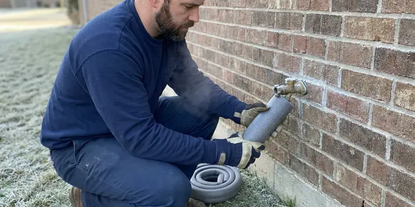

Plumbers Near Me in Urbandale, IA
When you need trusted plumbers near me in Urbandale, IA, KFR Plumbing is ready to help with any plumbing issue, big or small.
- Upfront Prices
- Licensed and Insured Team
- Licensed & Insured
- Upfront Quotes
Leak, Clog or No Hot Water? Call Your Neighborhood Plumber in Urbandale, IA.
Contact us for prompt and professional plumbing solutions suited to your home's needs.
Your Trusted Plumbers Near Me in Urbandale, IA for Every Plumbing Need
KFR Plumbing is a full-service plumbing company with licensed plumbers working throughout the area. We repair leaks, clear drains, install water heaters, replace fixtures and handle gas and water line work, all with written pricing before work starts.
Our expertise includes:
- Install and service water heaters, including tankless.
- Leak detection and repair on copper, PEX and galvanized pipe
- Water heater, softener and pressure regulator installation and service

Additional Plumbing Maintenance Services in Urbandale, IA
Our maintenance and specialty plumbing services in Urbandale, IA catch small problems before they become emergencies.


Customers
Why Choose KFR Plumbing for Plumbers Near Me in Urbandale, IA?
Our team brings broad knowledge of Iowa plumbing systems, offering solutions that stand up to local conditions and codes.
- Work Guaranteed, Our repairs carry a written workmanship warranty.
- Licensed Pros, Every job is handled or supervised by a licensed Iowa plumbing contractor.
- Rapid Response, For plumbing emergencies, our team is ready to respond fast to minimize damage and restore your peace of mind.
Citywide Coverage
Our plumbers work in every neighborhood of Urbandale, from established areas with original copper and galvanized pipe to newer communities plumbed with PEX. Wherever you live, a stocked truck is often nearby.
Experienced Team
The KFR Plumbing plumbing team is made up of committed professionals who take pride in their craft. They have deep knowledge of plumbing systems, allowing them to diagnose problems accurately and deliver effective, long-lasting solutions for our Urbandale customers.
Safety-First Approach
When you choose KFR Plumbing, you can rest assured that all work is performed with careful attention to safety and code compliance. Our plumbers are trained to identify and mitigate potential hazards, protecting your property and family in Urbandale.
Trusted Certified Urbandale Plumbing Services Professionals
At KFR Plumbing, we take pride in providing licensed, certified plumbing services throughout Urbandale, IA. Backed by leading industry credentials, our experienced plumbers combine technical skill with genuine customer care. Whether it is repair, installation, or maintenance, we follow strict safety and quality standards to deliver long-lasting results you can trust.
Call Us Now PHCC Plumbing Contractor Recognition
PHCC Plumbing Contractor Recognition Better Business Bureau (BBB) Accreditation
Better Business Bureau (BBB) Accreditation Angi Certified Pro
Angi Certified Pro ISO 9001 Quality Management Certification
ISO 9001 Quality Management CertificationReliable Plumbers Near Me Services in Urbandale, IA
Fixture Installation & Repair in Urbandale
From upgrading old fixtures to repairing broken ones, our plumbers provide professional installation and repair services for all your plumbing fixtures. This includes faucets, sinks, toilets, showers, bathtubs, and garbage disposals. We work with all major brands, ensuring proper installation and function. Whether you're remodeling a bathroom or simply need a leaky toilet fixed, we make sure your new or repaired fixtures work smoothly and efficiently in your Urbandale home.

Emergency Plumbing Repairs in Urbandale, IA
Burst pipes, overflowing toilets and gas smells cannot wait until Monday. Our emergency plumbers respond fast, shut off water or gas and make the repair or a safe temporary fix. We carry common parts to finish most emergency jobs in one trip. After-hours pricing is quoted in advance.
Drain Cleaning & Clog Removal in Urbandale
Stubborn clogs can disrupt daily life. Our plumbers use advanced techniques, including hydro-jetting and camera inspections, to effectively clear blockages from sinks, toilets, showers, and main sewer lines. We identify the cause of the clog, whether it's grease buildup or tree roots common in Urbandale's older neighborhoods, and make sure your drains flow freely.
Emergency Plumbing Services in Urbandale
Plumbing emergencies don't wait for business hours. Whether it's a burst pipe during a cold snap or a major sewer backup, our emergency plumbers are on call 24/7 to provide fast response. We arrive equipped with the needed tools and parts to limit damage quickly and start repairs, preventing further costly issues for your home in Urbandale.
Water Heater Services in Urbandale
Reliable hot water is essential, and our plumbers specialize in both tank and tankless water heater services. We handle everything from routine maintenance and minor repairs, such as anode rod replacement or flushing sediment buildup, to complete new installations. Whether you're upgrading to a more energy-efficient tankless model or replacing an aging conventional unit, we make sure of proper sizing and installation according to Urbandale's plumbing codes, for consistent hot water for your household.
Water Heater Repair & Installation in Urbandale, IA
From traditional tank heaters to modern tankless systems, our plumbers specialize in water heater repair and installation. We diagnose issues like no hot water, strange noises, or leaks, and recommend the most energy-efficient solutions for your Urbandale home. We work with trusted brands like Rheem, AO Smith, and Bradford White, for reliable hot water for your family.
Gas Line Services in Urbandale
Gas lines need specialized expertise for safe installation and repair. Whether you need a new gas line for an outdoor grill or a dryer, or need repair for a leak, our licensed plumbers handle all aspects of gas line work. We strictly follow safety standards and local codes in Urbandale for your peace of mind.

Emergency Plumbing in Urbandale
Plumbing emergencies don't wait for business hours. Whether it's a burst pipe, a major sewer backup, or a sudden water heater failure, our emergency plumbers in Urbandale are available to provide fast response and effective solutions. We understand the urgency of these situations and arrive equipped to diagnose and contain the problem quickly, minimizing damage and restoring peace of mind to your home or business.
Why Choose KFR Plumbing for Plumbers Near Me in Urbandale, IA?
When you search for 'plumbers near me' in Urbandale, IA, you're looking for local know-how and fast service. Our team is familiar with the plumbing infrastructure across the entire Urbandale area. This local focus allows us to provide faster response times and more tailored solutions for the common plumbing issues found in Iowa homes.
When something goes wrong with your plumbing, you want help from a team that is already in your area. Our plumbers live and work around Urbandale, so we arrive faster and know the local housing stock. That means quicker diagnosis and fewer surprises.
KFR Plumbing at a Glance
- Fully licensed plumbing team covering Urbandale, IA
- Same-day appointments and 24/7 emergency response
- Upfront, flat-rate pricing before work begins
- 4.8-star rated by 620+ Iowa customers
Urbandale Map
Urbandale Information
- Population
- 46,729
- Area codes
- Local
- Service area
- Urbandale and communities within 40 miles
- Nearby
- West Des Moines, Waukee, Des Moines, Ankeny
Water across much of Iowa comes from groundwater and runs hard to very hard, so scale buildup in water heaters and fixtures is common. For homes in Urbandale, IA, diligent plumbing maintenance and timely repairs help fight mineral buildup, soil movement and moisture, all of which can affect pipe integrity and fixture life.
Expert Services
Trust our professionals for reliable KFR Plumbing solutions in Urbandale, IA.
Our Specialized Plumbing Services in Urbandale, IA
At KFR Plumbing, we provide a complete range of plumbing services across Urbandale, IA. From leak detection to full system installations, our team ensures fast, precise, and affordable service for both residential and commercial properties. Explore our core services below:


How Our Plumbers Near Me Process Works in Urbandale, IA
At KFR Plumbing, we've streamlined our plumbing service process to be as clear and efficient as possible, for a hassle-free experience for our Urbandale, IA customers.
Request a Quote
Call us at (515) 308-3583 or fill out our online form to schedule an appointment. We'll gather basic information about your plumbing issue and set up a suitable time for a technician to visit your Urbandale home.
On-Site Diagnosis
A licensed plumber will arrive at your home, conduct a thorough inspection, and pinpoint the problem. They will explain their findings clearly and discuss all available repair or replacement options.
Upfront Pricing
Before any work begins, you'll receive a detailed, transparent quote outlining the cost of the service. We believe in no surprises, so you'll know the exact price for the plumbing work in Urbandale.
Frequently Asked Questions About Plumbers Near Me in Urbandale
The cost of plumbing services in Urbandale, IA can vary widely depending on the type and complexity of the job. Minor repairs like fixing a leaky faucet might range from $150 to $300, while more extensive work such as water heater replacement or sewer line repair could be anywhere from $800 to several thousand dollars. We always provide a clear, upfront estimate after diagnosing the problem.
For plumbing emergencies in Urbandale, we focus on rapid response. We aim to have a licensed plumber at your location as quickly as possible, often within a few hours, to address urgent issues like burst pipes or severe leaks. Call us directly for immediate assistance.
Yes. Most calls placed in the morning can be handled the same day. Emergency service is available for urgent problems like burst pipes and sewage overflows.
Yes. Our company holds the plumbing license required in Iowa, and our plumbers are trained and overseen accordingly. Plumbers in Iowa must hold a state license, so confirming a license before work starts is a simple way to protect your home. We also carry liability insurance and workers compensation.
Water heater replacements, gas line work, repipes and new fixtures in additions often require a permit. Minor repairs typically do not. We handle permits when they are needed.
We install and service Rheem, Bradford White, A. O. Smith, Navien, Rinnai and other major brands. We help you choose the right size and fuel type for your household. Tankless and high-efficiency options are offered.
Water across much of Iowa comes from groundwater and runs very hard, so scale buildup in water heaters and fixtures is common. Hard water leaves mineral scale on faucets, showerheads and inside water heaters and pipes. Over time this reduces flow and shortens the life of fixtures and appliances. A water softener can help protect your plumbing.
Yes. We serve restaurants, offices, retail stores and multifamily buildings. Services include backflow testing, grease traps, commercial water heaters and restroom fixtures.
What People Are Saying About Our Plumbing Experts?

Sofia M.
Two new toilets installed in one visit, no mess left behind, and the tech even adjusted a faucet he noticed was dripping. Fair pricing and really friendly.
Toilet Installation · Des Moines, IA
James P.
Our commercial plumbing system had a leak under the sink, and KFR Plumbing handled it professionally. The plumbers arrived quickly and restored everything without disruption to our customers.
Commercial Plumbing · West Des Moines, IA
Patricia H.
We had a slab leak that two other companies could not find. KFR Plumbing located it in under an hour, explained our options, and the price matched the quote to the dollar.
Slab Leak Repair · Cedar Falls, IALaura S.
I scheduled a water heater replacement, and the team made the process smooth and affordable. The new unit works perfectly, and they cleaned up after completing the job.
Water Heater Replacement · Ankeny, IA
Daniel K.
A pipe burst at 11 pm and they actually answered. The plumber showed up within the hour, shut everything down, and had us back to normal the next morning. Could not ask for more.
Emergency Plumbing · Ames, IA
Mark T.
When our office needed drain cleaning, KFR Plumbing provided quick, reliable service. The plumber arrived on time and made sure every drain flowed perfectly before leaving. Very satisfied.
Drain Cleaning · Urbandale, IA